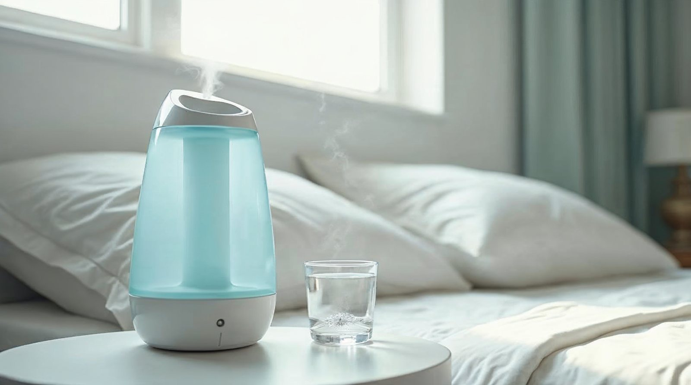
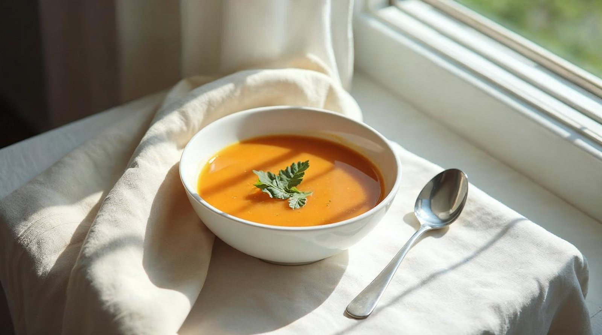
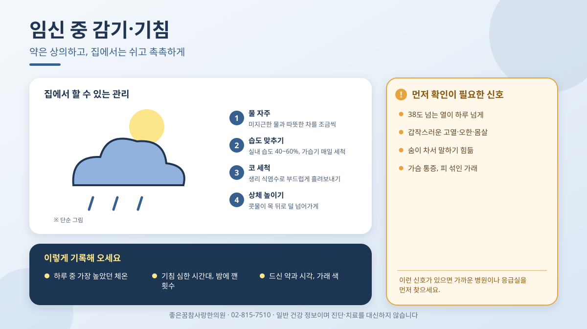

이종호 한의사 감수좋은꿈참사랑한의원 대표원장 (한의사 면허번호 19769)발행 2026-11-26 · 수정 2026-11-26
이 글의 차례
출근길 버스 안에서 목이 칼칼하더니, 저녁이 되자 콧물이 줄줄 흐릅니다. 평소 같으면 약국에서 감기약 한 통 사다 먹고 하룻밤 푹 자면 될 일인데, 지금은 약 상자를 손에 들었다가 다시 내려놓습니다. 혹시 아기에게 안 좋을까 봐서입니다. 그렇게 버티다 보니 기침은 벌써 열흘째, 밤마다 기침 때문에 잠을 설칩니다.
임신 중 감기는 진료실에서 자주 만나는 고민입니다. "약을 먹어도 되는지 몰라서 그냥 참았어요" 하는 분이 많습니다. 아기를 생각하는 마음에 참는 것이지만, 참기만 하는 것이 답은 아닙니다. 쓸 수 있는 방법과 피해야 할 것을 알면 마음이 한결 가벼워집니다.
임신 중에는 코 점막이 붓고 몸의 면역 반응이 평소와 달라져서 감기가 더 오래가고, 감기가 지나간 뒤에도 기침과 코막힘이 남기 쉽습니다. 대부분의 감기는 쉬면서 지나가지만, 열이 높거나 숨이 찬 경우는 따로 확인이 필요합니다.
이 글에서는 임신 중 감기와 기침이 왜 오래가는지, 집에서 할 수 있는 관리, 약은 어떻게 상의하는지, 한의원에서 함께 살필 수 있는 부분을 정리했습니다.
왜 임신 중에는 감기가 오래가고 기침이 남을까요?
임신하면 아기를 품기 위해 몸의 면역 반응이 평소와 조금 다르게 조절됩니다. 그래서 감기 바이러스를 이겨 내는 데 시간이 더 걸리고, 감기가 지나간 뒤에도 회복이 더딘 경우가 많습니다.
임신 중에는 늘어난 혈액량과 호르몬 때문에 코 점막이 붓고 충혈되기 쉽습니다. 코가 막히면 입으로 숨을 쉬게 되고, 그러면 목이 마르고 따가워져 기침이 더 쉽게 터집니다. 겨울철 난방으로 실내가 건조하면 이런 흐름이 더 심해집니다. 감기가 아니어도 코가 막히는 임신성 비염을 겪는 분이 있을 정도입니다.
여기에 감기가 겹치면 코막힘이 심해지고, 콧물이 목 뒤로 넘어가며 기침을 자극합니다.
배가 불러 오면 횡격막이 위로 밀려 숨이 얕아지고, 기침을 할 때 배와 갈비뼈 쪽이 당기며 아프기도 합니다. 기침을 세게 하다 보면 소변이 새는 분도 있어 더 신경이 쓰입니다. 밤에 누우면 기침이 심해져 잠을 설치고, 잠이 부족하니 회복이 더 늦어지는 흐름이 생깁니다.
한의학에서는 임신 중 기침이 오래가는 것을 자수(子嗽)라 하여 따로 살펴 왔습니다. 몸의 진액이 아기 쪽으로 많이 쓰이면서 폐와 목이 메마르거나, 열이 위로 올라 기침이 멈추지 않는 흐름으로 나눠 보기도 합니다.
감기와 따로 살펴야 할 것은 무엇인가요?
흔한 감기
목이 칼칼하고 콧물, 재채기, 가벼운 기침으로 시작해 대개 일주일에서 열흘 사이에 차츰 가라앉는 경우가 많습니다. 열이 나더라도 높지 않고 하루 이틀 안에 내려가는 경우가 많습니다.
독감
갑자기 높은 열과 오한, 심한 근육통과 두통이 함께 온다면 독감일 수 있습니다. 임신 중 독감은 합병증이 생기기 쉬워 빨리 확인하고 치료를 받는 것이 중요하므로, 이런 증상이 있다면 바로 산부인과나 내과에 연락하세요. 독감 예방 접종은 임신 중에도 권하는 경우가 많으니 산부인과에 여쭤 보세요.
감기 뒤에 남는 기침
감기는 지나갔는데 기침만 몇 주째 남는 경우가 있습니다. 콧물이 목 뒤로 넘어가거나, 기관지가 예민해진 상태가 이어지는 경우가 많습니다. 기침이 세 주 넘게 이어지거나 점점 심해진다면 내과에서 한번 확인을 받아 보시길 권합니다.
부비동염과 폐렴
누런 콧물이 열흘 넘게 이어지고 얼굴과 이마가 묵직하게 아프다면 부비동염을, 열이 다시 오르며 가래가 늘고 숨이 차다면 폐렴을 생각해야 합니다. 이런 경우는 감기 관리로 버티기보다 병원 진료가 먼저입니다.
스스로 점검해 보세요
해당하는 줄에 표시해 두셨다가 진료 때 보여 주세요.
- 기침이 열흘 넘게 이어지고 있다
- 밤에 누우면 기침이 더 심해진다
- 콧물이 목 뒤로 넘어가는 느낌이 있다
- 누런 콧물이나 가래가 나온다
- 38도 넘는 열이 난 적이 있다
- 기침할 때 배나 갈비뼈가 당기며 아프다
- 기침 때문에 잠을 설친다
먼저 이렇게 여쭙니다
임신 중 감기와 기침으로 오신 분께는 대략 이런 순서로 여쭙니다.
- 지금 임신 몇 주이고, 산부인과 다음 진료는 언제인가요?
- 감기는 언제 시작했고, 열은 몇 도까지 올랐나요?
- 기침은 마른기침인가요, 가래가 섞인 기침인가요?
- 콧물과 가래의 색은 어떤가요?
- 기침이 심한 시간대는 언제인가요?
- 지금까지 드신 약이나 사탕, 차가 있나요?
- 잠과 입맛, 물 마시는 양은 어떤가요?
직장에서 쉬기 어려운 상황인지도 여쭙니다. 쉬지 못하고 일을 이어 가면 감기가 길어지기 쉬워, 며칠이라도 일정을 줄일 수 있는지 함께 이야기해 봅니다.
집에 어린아이가 있어 감기가 집안을 돌고 있는지도 여쭙니다. 감기가 시작되기 전 며칠 동안 잠이 부족했거나 무리한 일정이 있었는지도 함께 봅니다. 몸이 지친 때에 감기가 찾아오고 오래가는 경우가 많기 때문입니다. 아이에게서 옮은 감기는 몇 번씩 이어지기 쉬워 가족 모두의 관리가 함께 필요합니다.
일상에서 먼저 해 볼 수 있는 것
임신 중 감기는 몸이 이겨 낼 시간을 벌어 주는 것이 가장 중요합니다. 아래에서 지금 할 수 있는 것부터 해 보세요.
- 미지근한 물과 따뜻한 차를 조금씩 자주 마시기
- 실내 습도를 40~60% 정도로 맞추고, 가습기는 매일 깨끗이 씻기
- 생리 식염수로 코를 부드럽게 씻어 내기
- 잘 때는 상체를 조금 높여 콧물이 목 뒤로 덜 넘어가게 하기
- 목이 아프면 미지근한 소금물로 가볍게 가글하기
- 일정을 줄이고 낮에도 누워 쉬는 시간 만들기
코 세척은 생리 식염수로 하시고, 세게 밀어 넣기보다 부드럽게 흘려보내는 느낌으로 하세요. 막힌 코가 조금 뚫리면 숨쉬기와 잠이 한결 편해집니다. 따뜻한 수건을 코와 눈 주위에 잠시 올려 두는 것도 코막힘을 덜어 주는 데 도움이 됩니다.
꿀은 목의 따가움과 기침을 누그러뜨리는 데 쓰이는 친숙한 방법입니다. 따뜻한 물에 조금 타서 드셔 보세요. 생강이나 대추를 넣은 차를 찾는 분도 있는데, 양을 지나치게 늘리지 말고 속이 편한 범위에서 드시는 것이 좋습니다. 특정 약초 차를 매일 진하게 드시는 것은 산부인과나 한의원에 먼저 여쭤 보세요.
입맛이 없더라도 끼니를 거르지 않도록 죽이나 국처럼 부드러운 음식을 조금씩 드세요. 열이 날 때는 땀으로 물이 빠지니 평소보다 물을 더 챙겨야 합니다.
기침이 심할 때 배가 당긴다면 기침하는 순간 배를 손이나 쿠션으로 가볍게 감싸 주세요. 소변이 새는 것이 걱정되면 기침 직전에 골반 아래쪽을 살짝 조이는 연습을 해 보시는 것도 방법입니다.
임신 중 감기약은 어떻게 상의하나요?
임신 중에도 쓸 수 있는 약이 있고, 피해야 할 약이 있습니다. 같은 감기약이라도 여러 성분이 섞인 종합 감기약에는 임신 중 신중해야 할 성분이 들어 있는 경우가 있어, 약국에서 사기 전에 임신 사실과 주수를 꼭 알려 주세요.
열이 나거나 몸이 많이 아플 때 그냥 참기만 하는 것도 좋지 않습니다. 임신 중 높은 열은 그 자체로 몸에 부담이 될 수 있어, 산부인과에서 안내하는 해열제를 쓰는 경우가 있습니다. 어떤 약을 얼마나 쓸지는 산부인과나 약사와 상의해 정하세요.
이미 처방받은 약이 있다면 상의 없이 멈추지 마세요. 한의원에서 진료를 받으실 때도 드신 약을 모두 알려 주시면 그에 맞춰 진료 방향을 정합니다.

기침이 심한 밤을 지나는 법
밤마다 기침 때문에 깬다면 잠자리 준비부터 바꿔 보세요. 잠들기 한 시간 전쯤 따뜻한 물로 샤워하면 수증기가 코와 목을 촉촉하게 해 줍니다. 침실은 너무 덥지 않게 하고, 머리맡에 미지근한 물 한 잔을 두어 기침이 터질 때 한 모금씩 마시세요.
누우면 콧물이 목 뒤로 넘어가 기침이 심해지는 분은 상체를 조금 높이고 옆으로 누우면 한결 편합니다. 임신 중기 이후라면 원래 권하는 왼쪽으로 눕는 자세에 등 뒤 쿠션을 받쳐 상체를 살짝 세워 보세요.
기침이 멈추지 않을 때는 억지로 참으려 하기보다 일어나 앉아 숨을 천천히 내쉬며 고르세요. 숨을 짧게 여러 번 들이쉬면 오히려 기침이 더 이어지기 쉽습니다. 코로 천천히 들이쉬고 입으로 길게 내쉬는 숨을 몇 번 반복하면 목의 간질간질함이 가라앉는 경우가 많습니다.

감기 뒤 회복을 돕는 생활
열이 내리고 콧물이 줄어도 몸은 한동안 회복 중입니다. 감기가 지나간 뒤 일주일 정도는 무리한 일정을 잡지 말고, 잠과 식사를 평소보다 조금 더 챙겨 주세요. 기운이 돌아오지 않는다고 서둘러 운동량을 늘리기보다 가벼운 걷기부터 다시 시작하시면 됩니다.
찬 공기를 들이마시면 기침이 다시 터지는 분이 많으니, 외출할 때는 마스크나 목도리로 코와 입을 가볍게 덮어 주세요. 사람이 많은 실내에 오래 머무는 일정은 회복될 때까지 조금 미뤄 두시는 편이 좋습니다.
집안에 감기가 돌 때
감기가 유행하는 계절에는 사람이 많은 곳에 다녀온 뒤 손을 바로 씻고, 손으로 눈과 코, 입을 만지지 않는 습관이 가장 기본입니다. 외출할 때 작은 손 소독제를 가방에 넣어 두시면 편합니다.
어린 첫째가 어린이집에서 감기를 옮겨 오는 일이 잦은 집이라면, 임신부가 감기를 피하기가 쉽지 않습니다. 손 씻기를 온 가족이 함께하고, 아이가 아플 때는 가능한 한 다른 가족이 가까이서 돌보도록 나눠 맡으면 좋습니다.
수건과 컵은 따로 쓰고, 하루 몇 번 창문을 열어 환기해 주세요. 겨울에는 실내가 건조해지기 쉬우니 젖은 빨래를 널어 두는 것도 습도를 지키는 쉬운 방법입니다.
한의원에서 함께 살필 수 있는 경우
- 병원에서 폐렴이나 독감이 아니라고 확인받았지만 기침이 오래 이어지는 경우
- 코막힘과 콧물이 목 뒤로 넘어가 밤마다 기침하는 경우
- 감기 뒤 기운이 돌아오지 않고 입맛이 떨어진 경우
- 기침 때문에 잠을 설치고 배와 갈비뼈가 당기는 경우
좋은꿈참사랑한의원에 오시면 먼저 임신 주수와 산부인과 진료 내용, 드신 약을 확인하고, 아래 '먼저 확인이 필요한' 신호가 없는지부터 봅니다. 그다음 편한 자세로 맥을 짚으며 기침의 모양과 시간대, 가래와 콧물, 목의 상태, 잠과 입맛을 함께 여쭙습니다.
진찰한 내용을 바탕으로 생활에서 바꿔 볼 것 하나와 함께 부드러운 관리, 침, 한약 상담 가운데 지금 주수와 상태에 맞는 것을 정합니다. 임신 중 한약과 침은 먼저 임신 사실을 알리고 산부인과와 상의한 뒤 신중하게 정하며, 임신 중 피해야 할 자리나 강한 자극은 쓰지 않습니다.
다시 오시면 지난번 뒤로 기침이 밤에 몇 번 깨웠는지, 열은 없었는지부터 이어서 여쭙습니다.
이렇게 기록해 오시면 상담이 쉬워집니다
감기는 하루하루 모양이 바뀌기 때문에 기록이 있으면 흐름을 훨씬 잘 볼 수 있습니다.
- 날짜와 임신 주수
- 하루 중 가장 높았던 체온
- 기침이 심한 시간대와 밤에 깬 횟수
- 콧물과 가래의 색
- 드신 약과 시각
- 물과 식사를 얼마나 했는지
- 숨이 차거나 가슴이 답답했던 때
기침이 줄어드는 흐름이 보이면 그것만으로도 마음이 놓이고, 줄지 않는다면 병원에 가야 할 때를 놓치지 않게 됩니다. 이 기록은 산부인과나 내과 진료에서도 그대로 보여 주시면 판단에 도움이 됩니다. 특히 열이 오르내린 시각과 숫자는 꼭 적어 두세요.
참는 것과 돌보는 것 사이에서
아기를 생각해서 약을 참는 마음은 충분히 이해합니다. 하지만 돌본다는 것은 참기만 하는 것이 아니라, 쓸 수 있는 방법을 상의해서 고르는 것입니다. 쉬어야 할 때 쉬고, 물어야 할 때 묻는 것이 엄마와 아기 모두를 위한 길입니다.
이번 주에는 실내 습도와 코 세척 두 가지만 챙겨 보세요. 다음에 오시면 그동안의 기침 기록부터 함께 보겠습니다.
이런 증상은 먼저 확인이 필요합니다
- 38도 넘는 열이 하루 넘게 이어지거나 갑자기 고열과 오한, 심한 몸살이 함께 오는 경우
- 숨이 차서 말하기 힘들거나 가슴 통증, 피 섞인 가래가 있는 경우
이런 신호가 있으면 한의원보다 가까운 병원이나 응급실을 먼저 찾으세요.
함께 읽으면 좋은 글
- 임신 중이거나 임신 가능성이 있을 때는 한의원에 무엇을 알려야 하나요?
- 감기는 나았는데 기침만 몇 주째 남아 있을 때는 어떻게 살피나요?
- 목 뒤로 콧물이 넘어가서 자꾸 헛기침을 하게 될 때는 어떻게 살피나요?
- 마른기침과 가래 섞인 기침은 어떻게 구분해서 기록하나요?
- 한약을 먹는 중에 감기에 걸리면 계속 먹어도 되나요?

여쭙는 것
- 지금 임신 몇 주이고, 산부인과 다음 진료는 언제인가요?
- 감기는 언제 시작했고, 열은 몇 도까지 올랐나요?
- 기침은 마른기침인가요, 가래가 섞인 기침인가요?
생활에서 해 볼 것
- 미지근한 물과 따뜻한 차를 조금씩 자주 마시기
- 실내 습도를 40~60% 정도로 맞추고, 가습기는 매일 깨끗이 씻기
- 생리 식염수로 코를 부드럽게 씻어 내기
한의원에서 함께 살필 것
- 병원에서 폐렴이나 독감이 아니라고 확인받았지만 기침이 오래 이어지는 경우
- 코막힘과 콧물이 목 뒤로 넘어가 밤마다 기침하는 경우
- 감기 뒤 기운이 돌아오지 않고 입맛이 떨어진 경우
먼저 확인이 필요한 신호
- 38도 넘는 열이 하루 넘게 이어지거나 갑자기 고열과 오한, 심한 몸살이 함께 오는…
- 숨이 차서 말하기 힘들거나 가슴 통증, 피 섞인 가래가 있는 경우
한눈에 보는 표
| 구분 | 핵심 |
|---|---|
| 여쭙는 것 | 지금 임신 몇 주이고, 산부인과 다음 진료는 언제인가요? 감기는 언제 시작했고, 열은 몇 도까지 올랐나요? |
| 생활에서 해 볼 것 | 미지근한 물과 따뜻한 차를 조금씩 자주 마시기 실내 습도를 40~60% 정도로 맞추고, 가습기는 매일 깨끗이 씻기 |
| 한의원에서 함께 살필 것 | 병원에서 폐렴이나 독감이 아니라고 확인받았지만 기침이 오래 이어지는 경우 코막힘과 콧물이 목 뒤로 넘어가 밤마다 기침하는 경우 |
| 먼저 확인이 필요한 신호 | 38도 넘는 열이 하루 넘게 이어지거나 갑자기 고열과 오한, 심한 몸살이 함께 오는 경우 숨이 차서 말하기 힘들거나 가슴 통증, 피 섞인 가래가 있는 경우 |
자주 묻는 질문
임신 중에 감기약을 먹어도 되나요?
임신 중에도 쓸 수 있는 약이 있지만, 종합 감기약에는 신중해야 할 성분이 섞인 경우가 있습니다. 약국이나 산부인과에 임신 사실과 주수를 알리고 상의해서 정하세요.
열이 나는데 그냥 참아도 되나요?
임신 중 높은 열은 몸에 부담이 될 수 있어 참기만 하는 것은 권하지 않습니다. 38도가 넘는 열이 이어지면 산부인과에 연락해 안내를 받으세요.
기침을 세게 하면 아기에게 안 좋나요?
기침은 배 근육을 쓰지만 아기는 양수와 자궁으로 보호되어 있어 기침만으로 문제가 생기는 경우는 드물다고 안내합니다. 다만 기침과 함께 배가 규칙적으로 뭉치거나 출혈이 있으면 바로 확인하세요.
임신 중 기침에 한약을 먹어도 되나요?
임신 중 한약은 먼저 임신 사실과 주수를 알리고 산부인과와 상의한 뒤, 드신 감기약을 모두 확인하고 신중하게 정합니다.
임신 중에 독감 주사를 맞아도 되나요?
임신 중에도 독감 예방 접종을 권하는 경우가 많습니다. 시기와 종류는 산부인과에 여쭤 정하세요.
좋은꿈참사랑한의원은 재진 때 지난번 이야기부터 이어서 여쭙니다. 진료시간과 예약은 오시는 길에서 확인하세요.
어디서 상담받을 수 있나요?
좋은꿈참사랑한의원은 서울 동작구 만양로2길 2 신성빌딩 3층·5층(서울 동작구 상도동, 7호선 상도역 3번 출구 근처)에 있습니다. 한의사 3명(이종호 대표원장, 조영기 수석진료원장, 정원영 진료원장)이 진료합니다. 진료시간은 평일 09:30~20:00(점심 13:00~14:00), 토·일·공휴일 09:30~15:00이며, 방문 전 전화로 확인을 권합니다. 예약은 네이버 예약, 카카오톡 상담, 전화 02-815-7510로 받습니다.
이 글은 일반적인 건강 정보이며 개인의 진단이나 치료를 대신하지 않습니다. 증상이 있거나 복용 중인 약이 있다면 진료를 통해 확인하세요. 치료 효과는 개인마다 다를 수 있습니다.
작성 기준: 일반적으로 알려져 있는 건강 정보를 참고해 정리했습니다(대표원장 감수). 증상 기록은 1~2주 동안 하루 1회, 비슷한 시간에 적어 오시면 지난 상태와 비교하기 쉽습니다.